Week 7
Running from the Call
Takeaway. When we run from God’s call, we don’t run alone. The people in the boat with us pay for it too.
Opening question. Have you ever known what God was asking of you and gone the other way?
Setting
We look at what happens when the call is clear and we refuse it.
Context
God sends Jonah to Nineveh, the great city of Israel’s enemy. Jonah boards a ship headed the opposite direction. The storm that follows puts the whole crew at risk, and Jonah sleeps below deck while the sailors pray (Jonah 1:4–6). When Jonah finally preaches, Nineveh turns, and God spares the city (Jonah 3:10). Jonah is angry, and he tells us why he ran: he knew God would be merciful (Jonah 4:1–2). Jesus tells a parable about the same refusal. A master entrusts his servants with bags of silver, and one buries his in the ground because he is afraid (Matthew 25:24–25).
Scripture
Texts. Jonah 1–4; Matthew 25:14–30; Matthew 12:40–41; John 11:49–52; Hebrews 3:15
“Get up and go to the great city of Nineveh. Announce my judgment against it because I have seen how wicked its people are.” But Jonah got up and went in the opposite direction to get away from the Lord.
Jonah 1:2–3, NLT
“Didn’t I say before I left home that you would do this, Lord? That is why I ran away to Tarshish! I knew that you are a merciful and compassionate God, slow to get angry and filled with unfailing love.”
Jonah 4:2, NLT
“I was afraid I would lose your money, so I hid it in the earth. Look, here is your money back.”
Matthew 25:25, NLT
Reflection
- The call is clear. Jonah isn’t confused. The word comes plainly: get up and go (Jonah 1:2). He gets up and goes the other way. Most of us know this move. We don’t argue with God. We just buy a ticket somewhere else.
- Others are in the boat. The storm hits the whole ship (Jonah 1:4). The sailors throw cargo overboard and cry out to their gods while Jonah sleeps below (Jonah 1:5–6). Then Jonah says it: “I know that this terrible storm is all my fault” (Jonah 1:12, NLT). Our refusals land on other people: a family, a church, a neighbor who needed what we were sent to bring. Ask the room who else is in the boat when we run.
- The prophet who doesn’t know he’s prophesying. God speaks through Jonah even while he runs. On the ship he names the God he is running from: “I worship the Lord, the God of heaven, who made the sea and the land” (Jonah 1:9, NLT). By the end of the storm the sailors are worshiping that God, and they vow to serve him (Jonah 1:16). In Nineveh his whole sermon is five words in Hebrew: “Forty days from now Nineveh will be destroyed!” (Jonah 3:4, NLT). He announces judgment, and the city repents. Even his three days in the fish become a sign Jesus points to: “so will the Son of Man be in the heart of the earth for three days and three nights” (Matthew 12:40, NLT). Jonah never knew he was preaching that. John says the same of Caiaphas, who “did not say this on his own” (John 11:51, NLT). Sometimes the prophet knows not that they prophesy.
- Why he ran. Jonah tells us himself. He ran because he knew God would be merciful (Jonah 4:2), and he didn’t want Nineveh spared. Sometimes we refuse a call because we know what God intends to do, and we don’t like it. That is hardened ground too: a heart that has already decided who deserves mercy.
- Buried out of fear. In the parable of the talents, two servants put the master’s silver to work. The third digs a hole: “I was afraid I would lose your money, so I hid it in the earth” (Matthew 25:25, NLT). He hands back exactly what he was given, and the master calls him wicked and lazy (Matthew 25:26). Jonah ran and this servant stayed put, but both refused the work. What we bury never reaches the people it was meant for.
- The question left open. God spares Nineveh (Jonah 3:10), and the book closes on a question: “Shouldn’t I feel sorry for such a great city?” (Jonah 4:11, NLT). Jonah never answers, so the question comes to us. Jesus later says the people of Nineveh will stand up on judgment day, because they repented at Jonah’s preaching (Matthew 12:41). A reluctant prophet still carried the word, and a whole city turned. Hebrews 3:15 asks the same of us: today, when we hear his voice, don’t harden our hearts.
For Discussion
- When have you known clearly what God was asking and gone the other way? What was your Tarshish?
- The servant buried his silver because he was afraid. What has fear kept you from putting to work?
- When God’s call has been clear and you went the other way, what did it cost the people around you?
- Jonah ran because he knew God would be merciful. Is there someone you would rather God not forgive?
- God’s question ends the book, and Jonah never answers it. How would you answer it?
- Where might God have spoken through you when you weren’t trying, or weren’t willing?
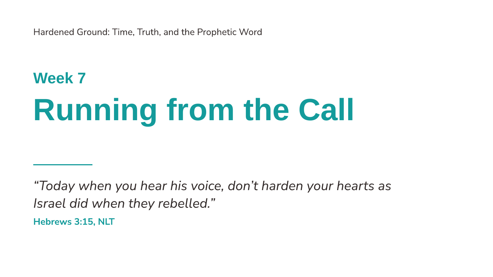
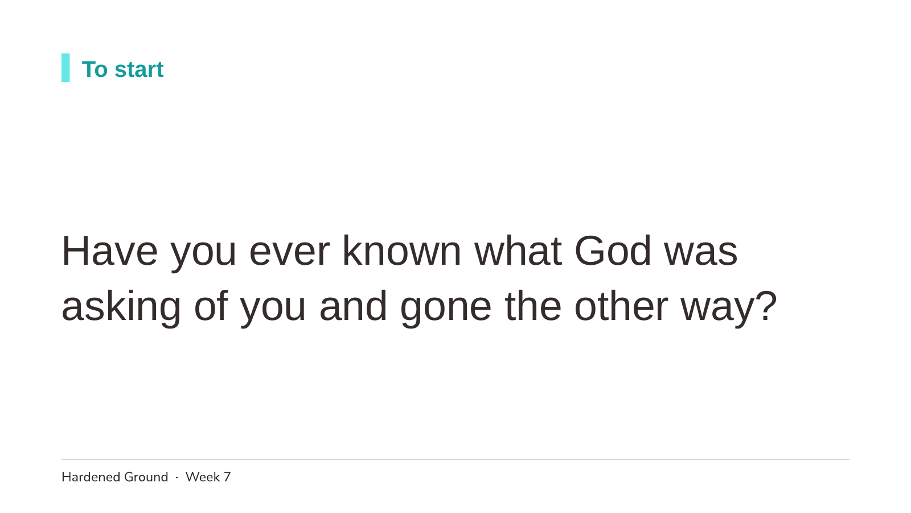
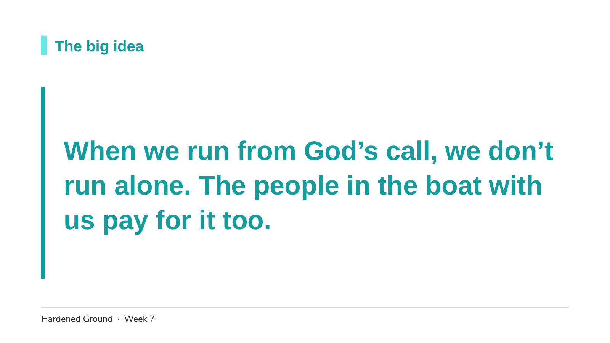
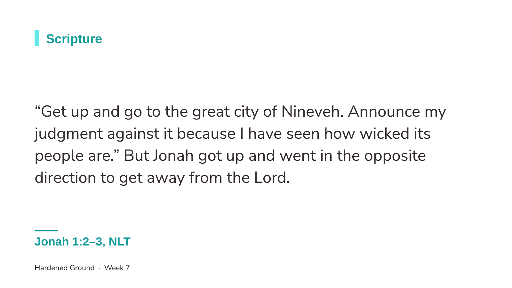

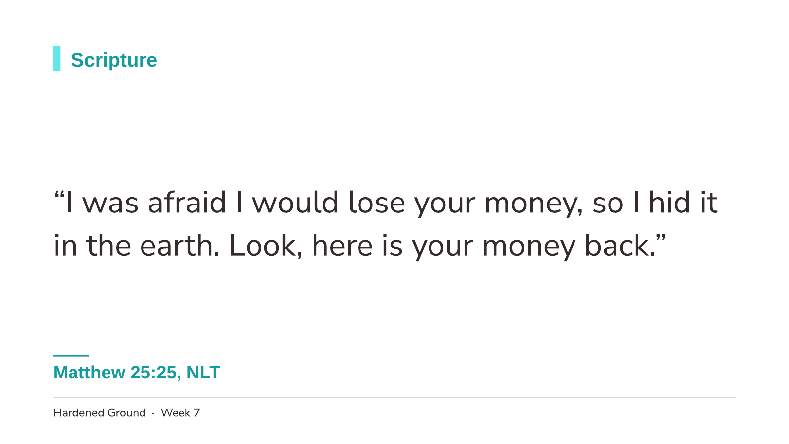
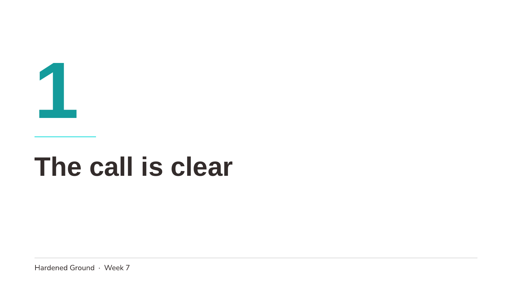
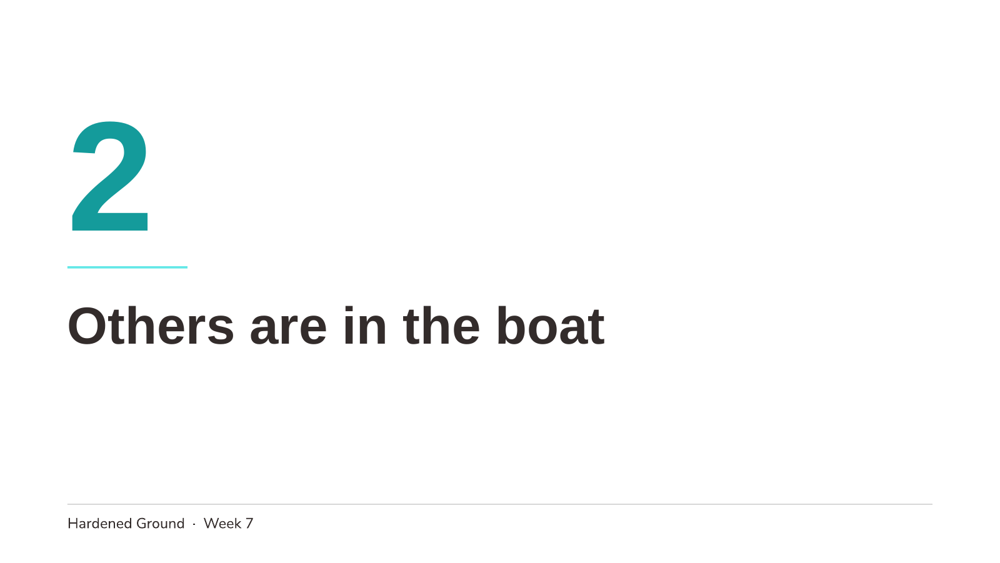

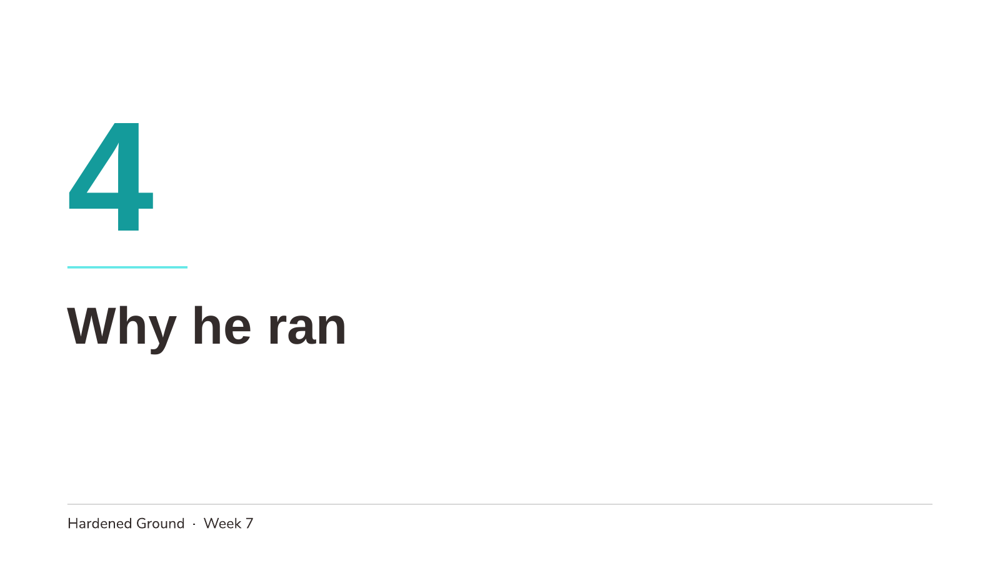
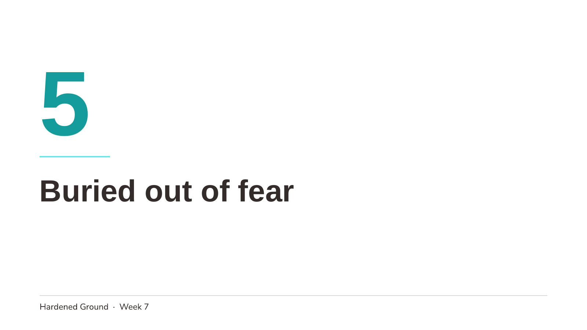


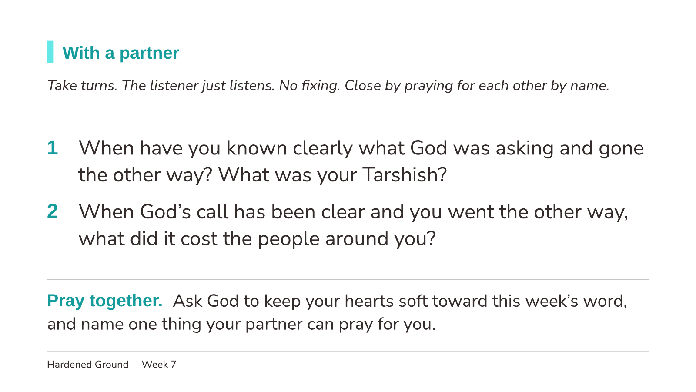
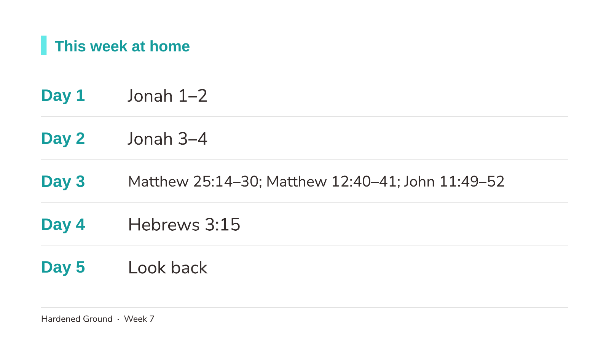
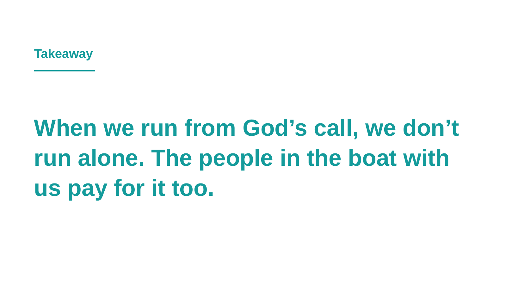